LABSI
2025/2026
Autor:
Rui Pedro Garriapa Bastos (Nº)1191044
1191044@isep.ipp.pt
Sistemas de gerenciamento de acessos são amplamente utilizados para controlar a entrada e saída de veículos em áreas restritas, como parques de estacionamento, de forma segura e organizada. A automatização deste tipo de sistemas permite reduzir a intervenção humana e melhorar a fluidez do tráfego, garantindo que apenas acessos autorizados são permitidos.
Neste projeto foi desenvolvido um protótipo de sistema de gerenciamento de acessos para um parque de estacionamento, baseado num microcontrolador. O sistema integra sensores infravermelhos para deteção da passagem de veículos, um servo motor responsável pela atuação da cancela, um teclado matricial para a introdução de um código PIN e um display LCD 16x2 para fornecer informação ao utilizador. A lógica de funcionamento é implementada através de uma máquina de estados, permitindo distinguir corretamente os cenários de entrada e saída, bem como a validação de acessos e a deteção de obstáculos. Adicionalmente, o sistema disponibiliza monitorização remota através de um bot Telegram, para o qual são enviados logs gerados via interface série, permitindo acompanhar o estado e o funcionamento do sistema à distância.
Atualmente, sistemas de gerenciamento de acessos utilizam soluções cada vez mais automatizadas, combinando sensores, atuadores e mecanismos de autenticação para gerir acessos de forma eficiente. Em aplicações modernas, é comum a integração de microcontroladores ou sistemas embebidos com interfaces locais e remotas, permitindo não só o controlo físico dos acessos, mas também a monitorização do estado do sistema em tempo real. Tecnologias como comunicação série, registo de eventos e plataformas de mensagens são frequentemente utilizadas para recolha de logs e acompanhamento do funcionamento, aumentando a fiabilidade e a capacidade de supervisão destes sistemas em ambientes reais.

Fig. 1 – Projeto
A arquitetura do sistema é centrada num microcontrolador ATmega2560, responsável pela coordenação dos diferentes componentes que compõem o sistema de gerenciamento de acessos.
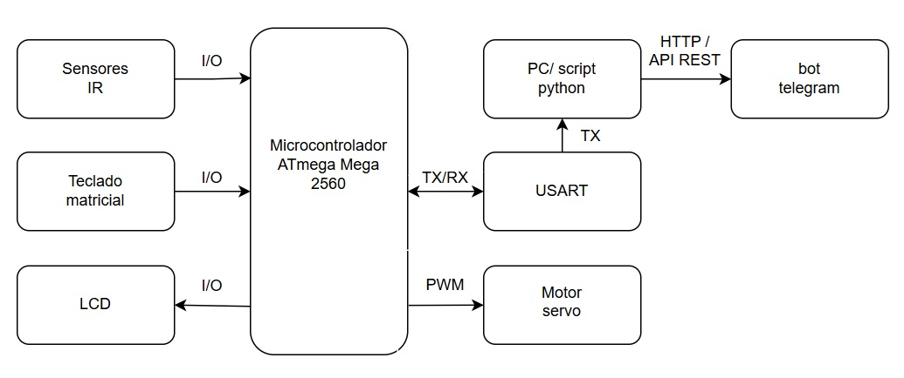
Fig. 2 – Arquitetura do sistema
Conforme ilustrado no diagrama, o microcontrolador recebe informação dos sensores infravermelhos e do teclado matricial, processando esses dados para comandar o servo motor responsável pela abertura e fecho da cancela e para atualizar o display LCD.A comunicação com o computador é realizada através da interface de comunicação série (USART), sendo os dados transmitidos recebidos por um script em Python. Este script atua como elemento intermédio, registando as mensagens de log em ficheiros locais e encaminhando-as para um bot Telegram através da utilização da API REST oficial da plataforma, recorrendo ao protocolo HTTP sobre ligações seguras HTTPS, permitindo assim a monitorização remota do estado e do funcionamento do sistema.
Arduino Mega 2560
O Arduino Mega 2560 é uma placa de desenvolvimento utilizada como unidade central do sistema, tendo sido escolhido pela elevada disponibilidade de pinos. No projeto, é responsável pela leitura dos sensores e do teclado, pelo controlo dos LEDs e do LCD e pela gestão da comunicação série para monitorização do sistema.
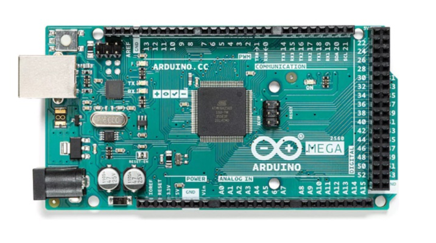
Fig. 3 – Arduino Mega 2560
Sensores Infravermelhos (IR)
Os sensores infravermelhos HW-201 foram escolhidos pela sua simplicidade de utilização e fiabilidade em aplicações de curta distância. No projeto, são utilizados para a deteção da presença de veículos, fornecendo ao microcontrolador a informação necessária para o controlo correto da cancela.

Fig. 4 – Sensor IR HW-201
Teclado Matricial 4x3
O teclado matricial 4x3 foi escolhido como interface de entrada por permitir uma introdução simples e intuitiva de dados por parte do utilizador. No projeto, é utilizado para a introdução de um código PIN, possibilitando a validação de acesso ao sistema.
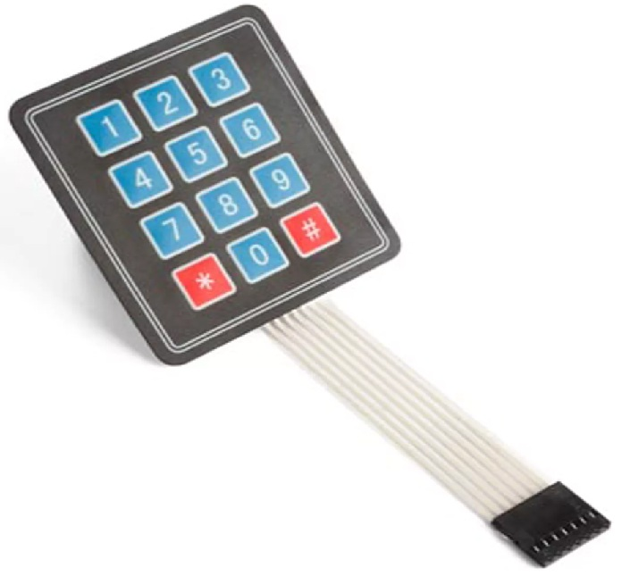
Fig. 5 – Teclado matricial 4x3
Display LCD 16x2
O display LCD 16x2 foi escolhido por a apresentar informação clara ao utilizador. No projeto, é utilizado para indicar o estado do sistema e fornecer mensagens importantes durante o processo de acesso ao parque de estacionamento.
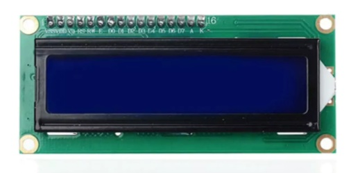
Fig. 6 – Display LCD 16x2
Servo Motor
O motor servo SG90 foi escolhido pela sua simplicidade de controlo e adequação a este sistema. No projeto, é utilizado para a controlar cancela, permitindo a sua abertura e fecho, de forma controlada, de acordo com o estado do sistema.
Fig. 7 – Motor servo SG90
LEDs
Os LEDs foram incluídos no projeto para fornecer informação visual sobre o estado do sistema. Dois dos LEDs indicam a presença de veículos nas zonas de entrada e saída da cancela, enquanto um terceiro LED pisca periodicamente. Todos os LEDs utilizam resistências de 330 Ω em série, garantindo a limitação de corrente e a proteção dos componentes.
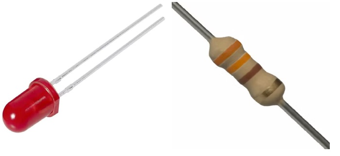
Fig. 8 – LED e Resistência
Esquema Elétrico
O esquema elétrico do sistema apresenta as ligações entre o microcontrolador e os restantes componentes do projeto, permitindo compreender a interligação e o funcionamento global do mesmo. Este diagrama constitui a base do projeto ao nível do hardware, servindo como referência para a implementação, análise e futura manutenção do sistema.
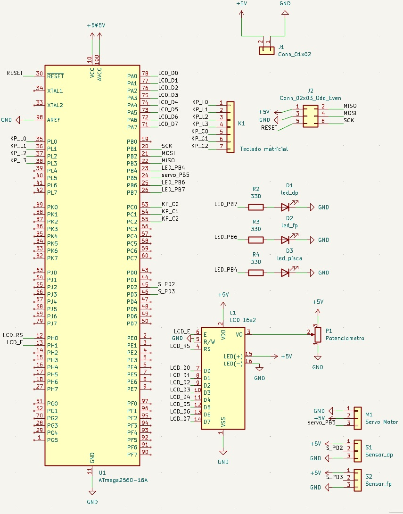
Fig. 9 – Esquema elétrico
Esquema PCB
O esquema PCB representa a implementação física do circuito, traduzindo o esquema elétrico para uma placa de circuito impresso. Nesta representação é possível observar a disposição dos componentes, permitindo validar o layout do sistema e facilitando a sua montagem.
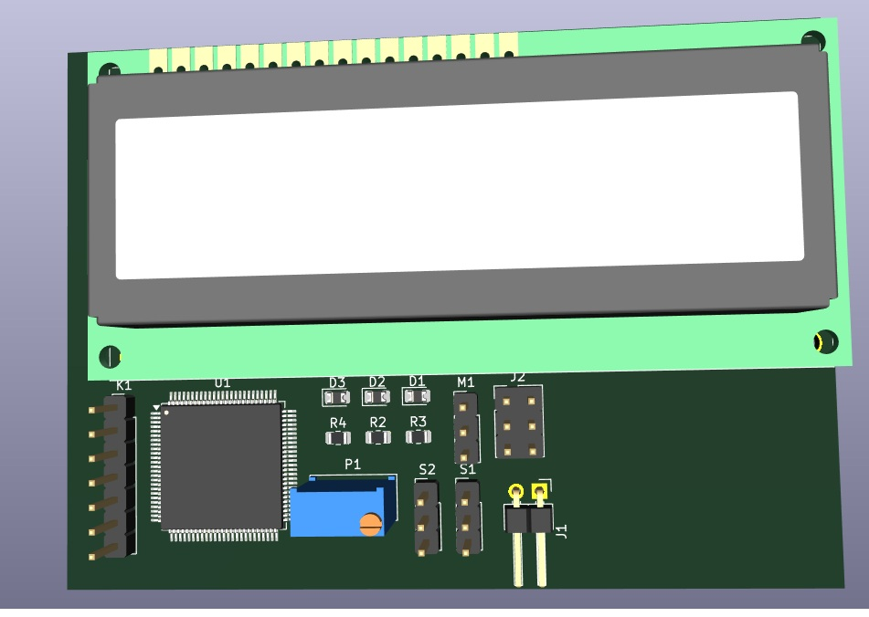
Fig. 10 – Esquema PCB
O software do sistema foi desenvolvido em linguagem C e executa integralmente a sua lógica no ficheiro principal (main), onde é realizado o controlo do fluxo geral do programa. A partir deste ficheiro são chamadas as diferentes rotinas e funções responsáveis pela gestão dos periféricos e pelo funcionamento global do sistema. Adicionalmente, os dados transmitidos via USART são recebidos no pc por um script desenvolvido em python, responsável pelo registo da informação num ficheiro de texto (logs.txt) e pelo encaminhamento desses dados para um bot de Telegram.
Defines
#define F_CPU 16000000UL
Define a frequência do clock do microcontrolador como 16 MHz.
#define sensor_dp PD2
#define sensor_fp PD3
Associa nomes simbólicos aos pinos digitais ligados aos sensores IR (sensor_dp e sensor_fp).
#define led_fp PB6
#define led_dp PB7
Define os pinos de saída onde estão ligados os LEDs.
#define L0 PL0
#define L1 PL1
#define L2 PL2
#define L3 PL3
Define os pinos correspondentes às linhas do teclado matricial 4×3 (PORTL).
#define C0 PC0
#define C1 PC1
#define C2 PC2
Define os pinos correspondentes às colunas do teclado (PORTC).
#define loop_ms 30
Define o loop_ms igual a 30, o período base usado em algumas lógicas do programa.
#define timeout_15s 15000
#define timeout_5s 5010
Define os tempos máximos, em milissegundos, para timeout do sistema: tempo total para introdução do PIN e tempo máximo sem inserir dígitos.
#define ciclos500_de30ms (timeout_15s / loop_ms)
#define ciclos167_de30ms (timeout_5s / loop_ms)
Converte os tempos de timeout definidos em milissegundos para número de ciclos de 30 ms.
#define num_pins_validos 2
Define o número de códigos válidos armazenados na tabela de verificação.
Inicializações
-> LCD (modo 8 bits)
DDRA = 0xFF;
DDRH |= (1 << PH0) | (1 << PH1);
PORTH &= ~((1 << PH0) | (1 << PH1));
Configura todos os pinos da PORTA como saídas, D0–D7 do LCD, configura os pinos PH0 (RS) e PH1 (E) como saídas, e põe o seu nível lógico a 0.
_delay_ms(20);
Após a alimentação do LCD, é aplicado um delay de 20 ms, garantindo a estabilização interna do controlador antes do envio de comandos.
lcd_comando(0x38); // Modo de comunicação 8 bits, display com 2 linhas
lcd_comando(0x08); // Desliga temporariamente o display
lcd_comando(0x01); // Limpa todo o conteúdo do display
lcd_comando(0x06); // Aumento automático do cursor após a escrita
lcd_comando(0x0C); // Liga o display, cursor desativado
Os comandos enviados ao LCD são transmitidos com o pino RS = 0, indicando instruções de controlo, e seguem as especificações do controlador HD44780, conforme descrito no respetivo datasheet [1].
-> USART
UCSR0A &= ~(1 << U2X0);
UBRR0H = 0;
UBRR0L = 103;
UCSR0C = (1 << UCSZ01) | (1 << UCSZ00);
UCSR0B = (1 << TXEN0);
O USART é configurado em modo assíncrono normal, com 8 bits de dados, 1 bit de stop e sem paridade. Como apenas é necessária a transmissão de dados do microcontrolador para o PC, é ativado exclusivamente o modo de transmissão (TX = 1). Os dados transmitidos via USART são recebidos no PC por um script Python para registo e encaminhamento.
O valor do registo UBRR0 é calculado para uma velocidade de transmissão de 9600 bps, considerando uma frequência de relógio de 16 MHz, de acordo com a expressão ilustrada na figura seguinte.
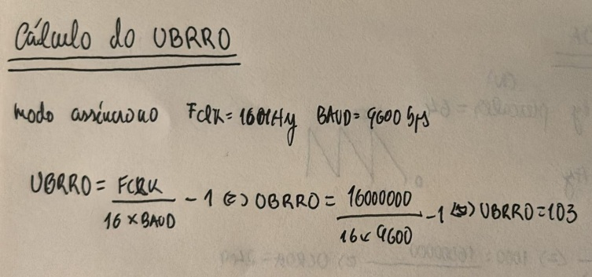
Fig. 11 – Cálculo do UBRR0
-> Servo (Timer1 – PWM em OC1A)
DDRB |= (1 << PB5);
ICR1 = 39999;
OCR1A = PULSO_FECHAR;
TCNT1 = 0;
TCCR1A = 0b10000010;
TCCR1B = 0b00011010;
TCCR1C = 0;
O pino PB5 (OC1A) é configurado como saída para gerar o sinal PWM de controlo do servo. O Timer1 é configurado em modo PWM, utilizando o registo ICR1 como valor de topo, definindo o período do sinal, e o registo OCR1A para definir a largura do pulso, correspondente à posição do servo. O registo OCR1A é inicializado com o valor PULSO_FECHAR, garantindo que a cancela arranca fechada.
O valor ICR1_TOP é definido de forma a obter aproximadamente 50 Hz (T = 20 ms), o recomendado para servos, sendo o valor de OCR1A ajustado para gerar pulsos de acordo com a posição pretendida no sistema.
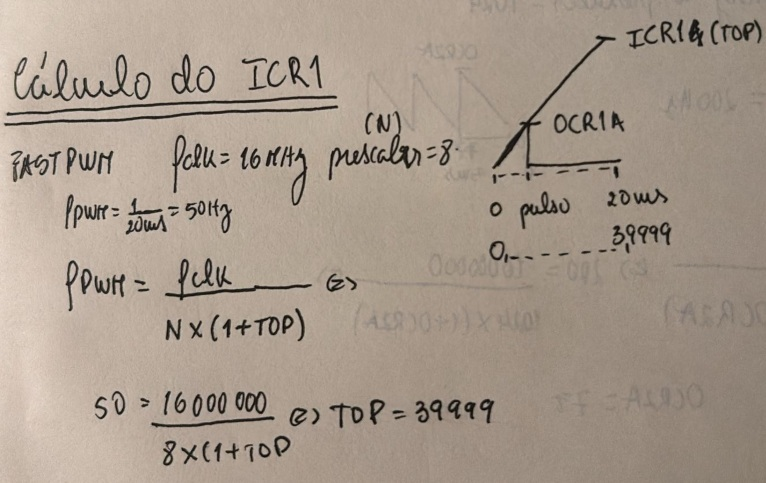
Fig. 12 – Cálculo do ICR1
-> Sensores IR
DDRD &= ~((1 << sensor_dp) | (1 << sensor_fp));
PORTD |= (1 << sensor_dp) | (1 << sensor_fp);
Os pinos dos sensores IR são configurados como entradas digitais, através dos respetivos bits no registo DDRD. De seguida, são ativadas as resistências de pull-up internas colocando os bits correspondentes a nível lógico igual a 1.
Esta configuração garante um nível lógico definido quando os sensores não estão ativos, permitindo a deteção fiável da presença ou ausência de obstáculos através da leitura do estado lógico das entradas.
-> LEDs
DDRB |= (1 << led_fp) | (1 << led_dp);
PORTB &= ~((1 << led_fp) | (1 << led_dp));
DDRB |= (1 << PB4);
Os pinos associados aos leds, led_fp e led_dp são configurados como saídas digitais através do registo DDRB, sendo inicializados no estado desligado ao colocar os respetivos bits a nível lógico igual a 0 no registo PORTB. Adicionalmente, o pino PB4 (OC2A) é igualmente configurado como saída, sendo utilizado para o LED que pisca controlado pelo Timer2.
-> Teclado Matricial 4×3
DDRL |= (1<<L0) | (1<<L1) | (1<<L2) | (1<<L3);
PORTL |= (1<<L0) | (1<<L1) | (1<<L2) | (1<<L3);
DDRC &= ~((1<<C0) | (1<<C1) | (1<<C2));
PORTC |= (1<<C0) | (1<<C1) | (1<<C2);
As linhas do teclado (L0–L3, PORTL) são configuradas como saídas e o seu nível lógico é posto a 1 (desligado), permitindo ativar cada linha durante o varrimento. As colunas (C0–C2, PORTC) são configuradas como entradas, com as resistências de pull-up internas ativadas, garantindo um nível lógico definido, igual a 1, quando nenhuma tecla é premida. Durante a leitura, ao colocar uma linha a nível baixo (igual a 0), a pressão de uma tecla provoca a alteração do estado lógico na coluna correspondente, permitindo identificar a tecla premida.
-> Timer0
TCCR0A = (1 << WGM01);
TCCR0B = 0;
OCR0A = 249;
TIMSK0 = (1 << OCIE0A);
TCCR0B |= (1 << CS01) | (1 << CS00);
O Timer0 é configurado em modo CTC (Clear Timer on Compare Match), utilizando um prescaler de 64, de forma a gerar uma interrupção periódica a cada 1 ms. Considerando uma frequência de relógio de 16 MHz, o valor do registo de comparação OCR0A é calculado para obter este período de interrupção, conforme ilustrado na figura seguinte. Esta base de tempo de 1 ms é utilizada pelo sistema para a contagem de interrupções em software, permitindo a geração de eventos temporizados, nomeadamente uma interrupção a cada 30 ms, utilizada no controlo interno do sistema.
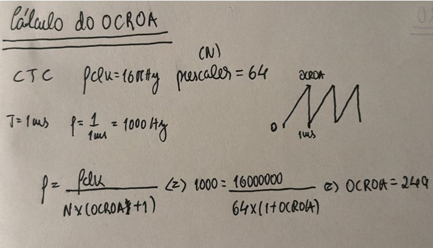
Fig. 13 – Cálculo do OCR0A
-> Timer2
TCCR2A = (1 << WGM21);
TCCR2B = (1 << CS22) | (1 << CS21) | (1 << CS20);
OCR2A = 77;
TIMSK2 = (1 << OCIE2A);
O Timer2 é configurado em modo CTC, utilizando um prescaler de 1024, de forma a gerar interrupções com um período aproximado de 5 ms. Considerando uma frequência de relógio de 16 MHz, o valor do registo de comparação OCR2A é calculado, conforme ilustrado na figura seguinte. As interrupções geradas são contadas em software até perfazer aproximadamente 0,5 s, momento em que o estado lógico do led (pino PB4) é alternado, gerando o efeito de piscar do led.
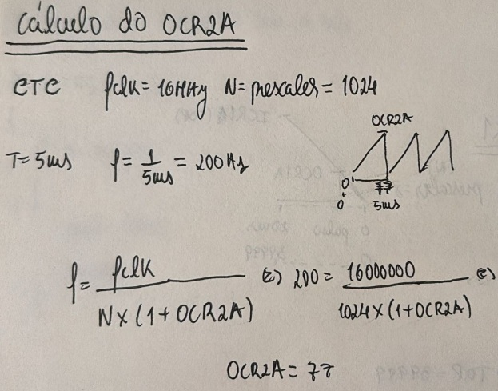
Fig. 14 – Cálculo do OCR2A
-> Ativação global de interrupções
sei();
A instrução sei() ativa globalmente as interrupções no microcontrolador, permitindo a execução das rotinas de interrupção configuradas, nomeadamente as do Timer0 e do Timer2 utilizadas no sistema.
Descrição de cada função — parque.ino
O ficheiro parque.ino contém a lógica principal do sistema, sendo responsável pela máquina de estados e pela coordenação do projeto.
A) Controlo da cancela (servo)
void abrir_cancela(void)
Esta função é responsável por abrir a cancela, comandando o servo motor para a posição de abertura. O controlo de abertura é efetuado ao escrever 1000 no registo OCR1A, que define o duty cycle do sinal PWM gerado pelo Timer1. A função não recebe parâmetros nem devolve qualquer valor, limitando-se a abrir a cancela.
void fechar_cancela(void)
A função fechar_cancela tem como objetivo fechar a cancela, posicionando o servo motor na sua posição de repouso. Para fechar a cancela é escrito 2800 no registo OCR1A, correspondente ao pulso de fecho do servo. A função não recebe parâmetros nem devolve qualquer valor, limitando-se a fechar a cancela.
B) Sensores IR (entrada/saída)
uint8_t sensor_dp_detetado(void)
Esta função é responsável por verificar a deteção de um veículo pelo sensor IR localizado no interior do parque. A leitura é realizada através do registo PIND, sendo verificado o estado do pino PD2. Como o sensor utiliza lógica ativa a nível baixo, a função considera que existe deteção quando o bit correspondente se encontra a zero. A função não recebe parâmetros e devolve o valor 1 quando um veículo é detetado ou 0 caso contrário.
uint8_t sensor_fp_detetado(void)
A função sensor_fp_detetado tem como objetivo verificar a deteção de um veículo pelo sensor IR localizado no exterior do parque. A leitura é realizada através do registo PIND, sendo verificado o estado do pino PD3. Como o sensor utiliza lógica ativa a nível baixo, a função considera que existe deteção quando o bit correspondente se encontra a zero. A função não recebe parâmetros e devolve o valor 1 quando um veículo é detetado ou 0 caso contrário.
C) LEDs (indicação de sensores)
void atualiza_leds(void)
Esta função é responsável por atualizar o estado dos LEDs de acordo com a informação fornecida pelos sensores IR. O LED associado ao sensor exterior é ligado quando a função sensor_fp_detetado indica a presença de um veículo, sendo ativado o pino PB6 do porto B. De igual forma, o LED associado ao sensor interior é controlado com base no resultado da função sensor_dp_detetado, sendo ativado o pino PB7. Sempre que não é detetado veículo, os respetivos LEDs são desligados. A função não recebe parâmetros nem devolve valores, e é chamada ciclicamente na main e em funções bloqueantes, garantindo a atualização contínua dos LEDs.
D) Teclado matricial (varrimento)
inline void linhas_desligadas(void)
Esta função tem como objetivo desativar todas as linhas do teclado matricial, colocando-as a nível lógico alto. Para tal, são colocados a 1 os pinos PL0, PL1, PL2 e PL3, garantindo que nenhuma linha se encontra ativa. Esta função é utilizada como passo intermédio no processo de varrimento do teclado, evitando ativações simultâneas de várias linhas.
void linha_ligada(uint8_t l)
A função linha_ligada é responsável por ativar uma linha do teclado matricial, colocando-a a nível lógico baixo, enquanto todas as outras permanecem desligadas. O parâmetro de entrada l é utilizado no switch para selecionar a linha que vai ser ativada. Esta abordagem permite o varrimento sequencial das linhas do teclado.
uint8_t ler_colunas(void)
Esta função permite detetar qual a coluna do teclado que se encontra pressionada, através da leitura do registo PINC. São verificados os estados dos pinos PC0, PC1 e PC2, sendo devolvido o índice da coluna correspondente quando é detetado um nível lógico baixo, caso nenhuma coluna esteja pressionada, a função devolve o valor 0xFF (255), indicando ausência de entrada.
char leitura_feita(void)
A função leitura_feita executa o varrimento completo do teclado matricial, ativando sequencialmente cada uma das linhas e verificando as colunas associadas. Para cada linha ativa, é introduzido um pequeno atraso, para estabilizar, após o qual é realizada a leitura das colunas. Quando é detetada uma tecla pressionada, a função devolve o carácter correspondente com base na matriz do teclado. Caso nenhuma tecla seja detetada após o varrimento de todas as linhas, a função dá reset nas linhas e devolve o valor 0.

Fig. 15 – Fluxograma leitura_feita
char leitura_completa(void)
Esta função é responsável pela a anti-repetição de teclas, garantindo que cada tecla pressionada é registada apenas uma vez, mesmo continuando a pressionar o botão. A função compara a tecla atualmente detetada com a última tecla registada, devolvendo o carácter apenas quando ocorre uma nova pressão. Quando nenhuma tecla está pressionada, o estado interno é reiniciado. Esta função é utilizada pelas rotinas de introdução do PIN, assegurando uma leitura fiável e sem repetições indesejadas.
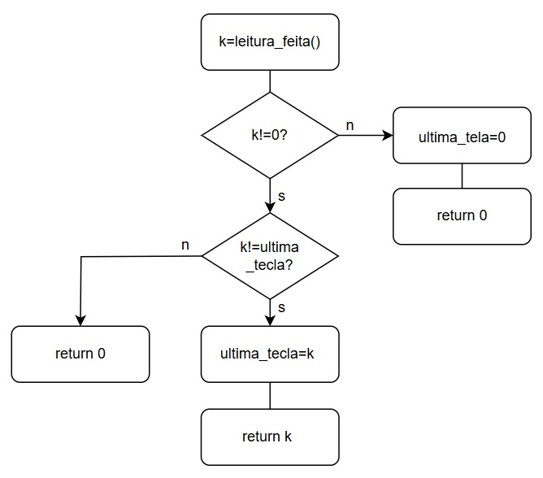
Fig. 16 – Fluxograma leitura_completa
E) PIN (gestão, validação, feedback)
void pin_reset(void)
Esta função é responsável por reiniciar o processo de introdução do PIN, colocando o índice do PIN a zero e reseta o contador de tempo desde a introdução do primeiro dígito. É utilizada sempre que o PIN é apagado, validado, considerado inválido ou quando ocorre um timeout.
bool pin_e_valido(void)
A função pin_e_valido verifica se o PIN introduzido corresponde a algum dos PINs válidos definidos no sistema. Para tal, o conteúdo do buffer do PIN é comparado, dígito a dígito, com cada PIN armazenado na lista de PINs válidos. Caso seja encontrada uma correspondência completa, a função devolve o valor true; caso contrário, devolve false.
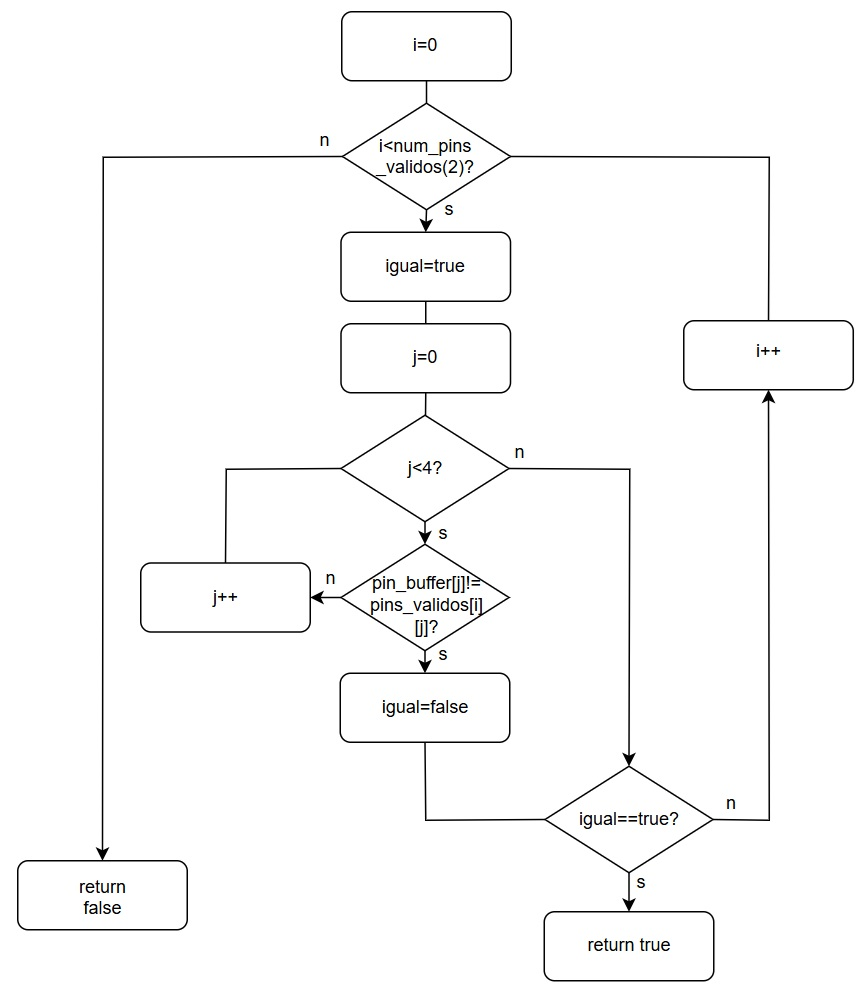
Fig. 17 – Fluxograma pin_e_valido
void lcd_mostra_pin_progresso(void)
Esta função tem como objetivo mostrar no LCD o progresso da introdução do PIN, apresentando um asterisco por cada dígito introduzido, garantindo que os dígitos reais não são visíveis ao utilizador, por razões de segurança.
void usart_mostra_pin_progresso(void)
A função usart_mostra_pin_progresso é responsável por enviar o conteúdo atual do PIN através da interface USART, permitindo o acompanhamento do processo de introdução do código no sistema de monitoramento.
int8_t trata_tecla(char k)
Esta função é responsável por processar cada tecla pressionada durante a introdução do PIN, gerindo o buffer de dígitos e dando feedback ao utilizador. Quando a tecla '*' é pressionada antes de o PIN estar completo, o conteúdo introduzido é apagado e é apresentada uma mensagem no LCD, sendo igualmente enviada uma mensagem pelo USART. Cada tecla válida é armazenada no buffer do PIN, sendo o progresso atualizado tanto no LCD como no USART. Quando são introduzidos quatro dígitos, o PIN é validado através da função pin_e_valido, sendo apresentado feedback ao utilizador indicando se o código está correto ou incorreto. Após a validação, o PIN é reiniciado. A função devolve o valor 1 quando o PIN é válido, 0 quando o PIN é inválido e -1 enquanto o PIN está incompleto.
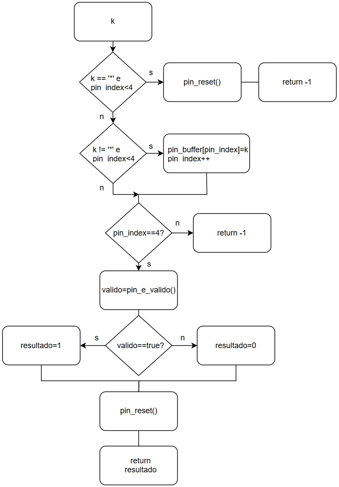
Fig. 18 – Fluxograma trata_tecla
uint8_t codigo_valido(void)
A função codigo_valido implementa um processo bloqueante de introdução e validação do PIN, sendo responsável pelo controlo temporal e pela decisão final do resultado da autenticação. Após inicializar o processo e apresentar mensagens no LCD e no USART, a função executa um ciclo contínuo sincronizado com uma flag de 30 ms, permitindo a leitura periódica do teclado e a atualização dos LEDs. Durante este ciclo, são geridos dois mecanismos de timeout: um tempo máximo sem qualquer tecla pressionada e um tempo máximo desde a introdução do primeiro dígito, sendo ambos controlados através de contadores incrementados a cada período de 30 ms. Cada tecla detetada é processada pela função trata_tecla, que gere o buffer do PIN e o respetivo feedback ao utilizador. O ciclo termina quando o PIN é validado, rejeitado ou quando ocorre um timeout, sendo a função finalizada com o retorno do valor 1 em caso de PIN válido ou 0 em caso de PIN inválido ou timeout.
| 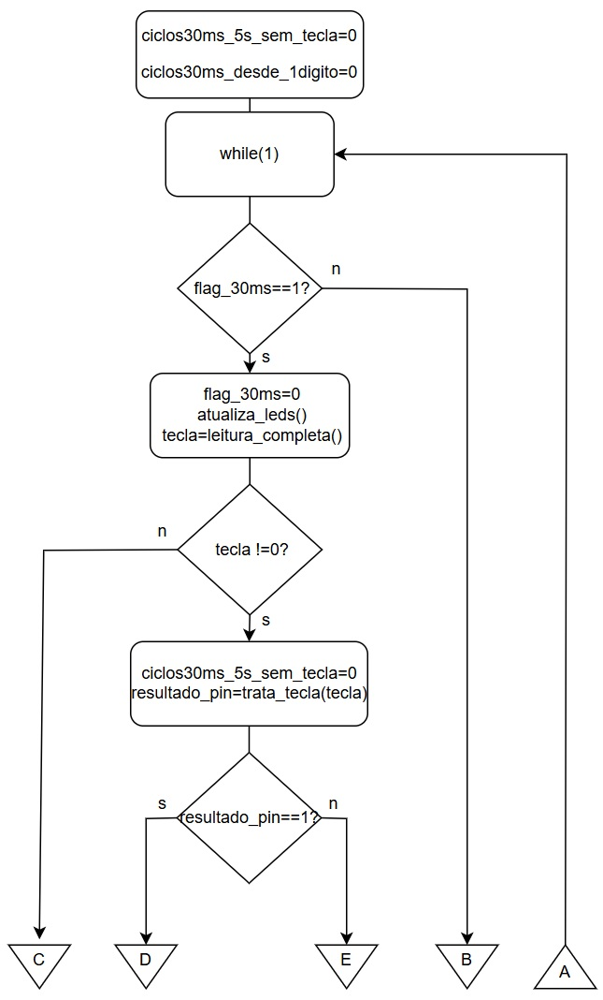 | 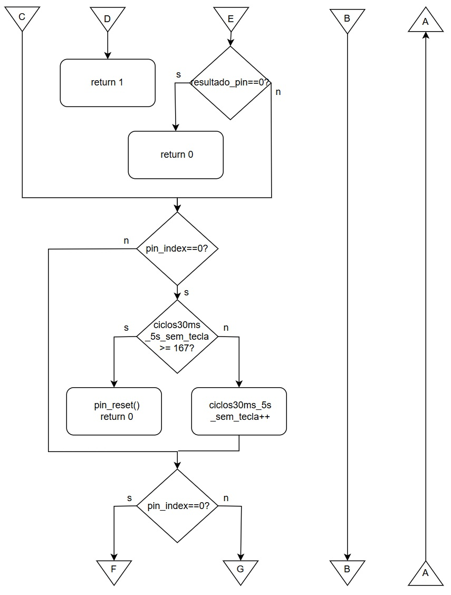 |
| Fig. 19 – Fluxograma codigo_valido | Fig. 20 – Fluxograma codigo_valido |
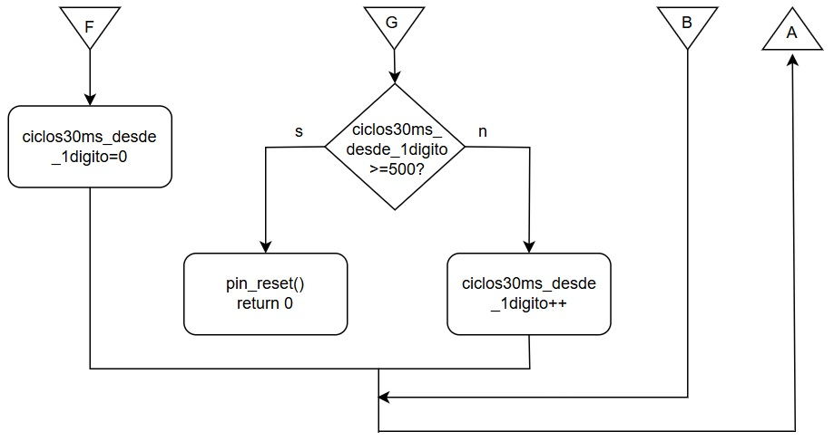
Fig. 21 – Fluxograma codigo_valido
F) Estado do sistema (LCD e USART)
void lcd_estado(estado_t estado)
A função lcd_estado é responsável por atualizar o LCD e enviar mensagens pelo USART de acordo com o estado atual da máquina de estados. Para evitar atualizações redundantes, a função começa por verificar se o estado recebido é igual ao último estado apresentado. Se o estado atual coincidir com o último estado apresentado, a função não executa qualquer ação. Quando ocorre uma mudança de estado, é executada uma instrução switch responsável pela atualização do LCD e pelo envio das mensagens correspondentes via USART. A função não recebe parâmetros adicionais nem devolve valores, sendo chamada ciclicamente pela função principal para garantir que a interface reflete corretamente o estado atual do sistema.
G) Rotinas de interrupção
ISR(TIMER0_COMPA_vect)
Esta rotina de interrupção é executada periodicamente pelo Timer0 e tem como objetivo gerar uma base temporal de 30 ms para o funcionamento do sistema. A cada interrupção é incrementado um contador de 1 milissegundo, sendo ativada a flag flag_30ms sempre que o tempo acumulado atinge 30 ms. Esta flag é utilizada no programa principal e em funções bloqueantes para sincronizar leituras periódicas, nomeadamente a leitura do teclado e a gestão de timeouts.
ISR(TIMER2_COMPA_vect)
A rotina de interrupção associada ao Timer2 é utilizada para colocar o led a piscar. A cada interrupção é incrementado um contador, sendo efetuado o toggle do pino PB4 sempre que o tempo acumulado atinge 500 ms.
H) Inicialização
As funções timer0e2_ini e inic são responsáveis pela inicialização geral do sistema. A função timer0e2_inic configura os temporizadores utilizados para gerar as interrupções periódicas do sistema, enquanto a função inic inicializa o LCD e a USART, configura o temporizador responsável pelo controlo do servo motor, define a direção dos pinos associados aos sensores, LEDs e teclado matricial, e ativa as interrupções globais. Todas as configurações e inicializações de hardware do sistema encontram-se nestas funções.
I) Função principal
int main(void)
A função main implementa a máquina de estados principal do sistema, sendo responsável por coordenar o funcionamento global do parque de estacionamento. Após a inicialização dos componentes do sistema, a cancela é colocada no estado fechado e o estado inicial é definido como FECHADA. O programa entra então num ciclo infinito, onde são continuamente atualizados o estado dos LEDs e a interface de utilizador através da função lcd_estado. A lógica de funcionamento é organizada através de um switch, que define as transições entre estados com base na deteção de veículos pelos sensores IR e no resultado da validação do PIN. Dependendo do sentido de circulação (entrada ou saída), o sistema controla a abertura e o fecho da cancela, garantindo que esta apenas é fechada após a passagem completa do veículo.
| 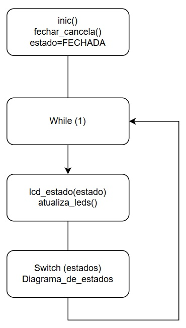 | 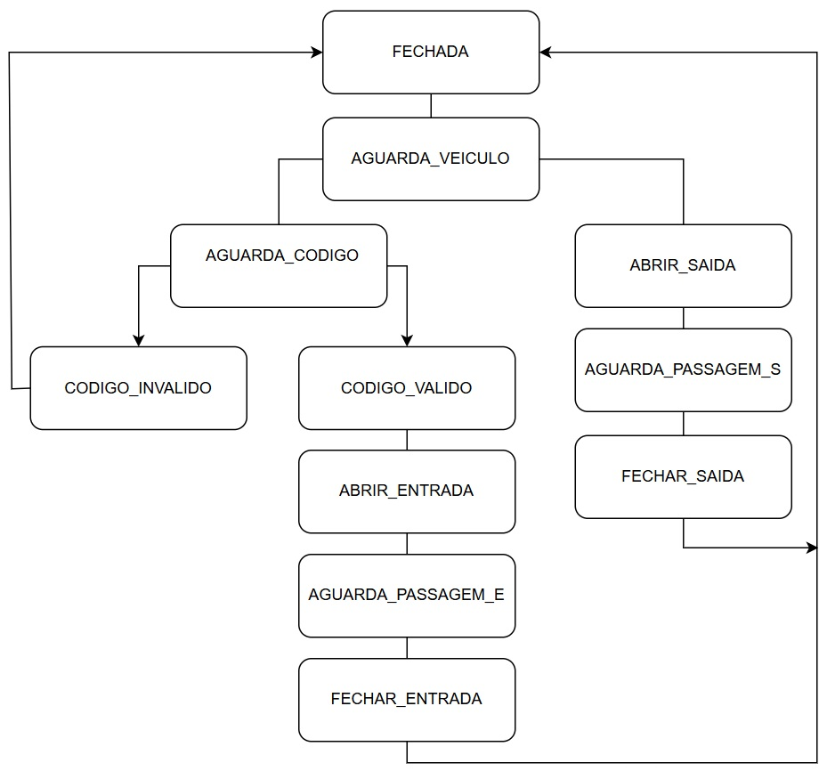 |
| Fig. 22 – Fluxograma main | Fig. 23 – Fluxograma main |
2) Descrição de cada função — lcd.c/lcd.h
O controlo do LCD foi implementado sob a forma de uma biblioteca (lcd.c e lcd.h), permitindo a utilização das suas funções e facilitando a organização do código.
lcd_pulso_E(void)
Função interna responsável por gerar o pulso no sinal E, necessário para validar a escrita de dados ou comandos no LCD.
lcd_escreve_byte(uint8_t valor, uint8_t RS)
Esta função envia um byte para o LCD, definindo o modo de operação através do RS, que indica se o byte corresponde a um comando ou a um dado. O valor é colocado no barramento de dados e validado através de um pulso no sinal E, esta função constitui a base de toda a comunicação com o LCD.
lcd_comando(uint8_t cmd)
Função responsável por enviar comandos de controlo para o LCD, recorrendo à função de escrita de byte em modo de comando.
lcd_caracter(uint8_t dados)
Esta função envia um caracter para o LCD, permitindo a escrita de texto no display. Internamente utiliza a função de escrita de byte em modo de dados.
lcd_sel_cursor(uint8_t linha, uint8_t coluna)
Função que posiciona o cursor numa linha e coluna específicas do LCD, sendo utilizada antes da escrita de texto em posições definidas.
lcd_escreve_frase(const char *str)
Esta função permite escrever uma frase completa no LCD, enviando cada caracter de forma sequencial até ao final da cadeia de caracteres.
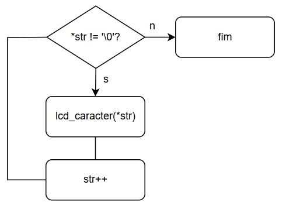
Fig. 24 – Fluxograma lcd_escreve_frase
lcd_limpar_linha(uint8_t linha)
Função responsável por limpar uma linha específica do LCD, substituindo o conteúdo existente por espaços em branco.
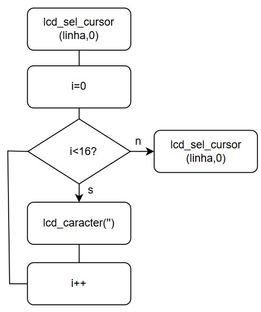
Fig. 25 – Fluxograma lcd_limpar_linha
lcd_limpar(void)
Esta função limpa completamente o conteúdo do LCD, sendo utilizada sempre que se pretende atualizar toda a informação apresentada no display.
lcd_msg(const char *linha0, const char *linha1)
Função utilizada no projeto para apresentar mensagens completas no LCD, escrevendo diretamente nas duas linhas do display.
lcd_inic(void)
A função lcd_inic executa a sequência de inicialização do LCD, preparando o display para funcionamento em modo de 8 bits.
3) Descrição de cada função — usart.c / usart.h
O controlo da comunicação série foi implementado sob a forma de uma biblioteca (usart.c e usart.h), facilitando a organização do código.
usart_inic(void)
A função usart_inic executa a sequência de inicialização da interface USART, preparando o sistema para a transmissão de dados.
usart_caracter(char caracter)
Esta função envia um único caracter através da interface USART. Antes do envio, é verificado se o registo de transmissão se encontra disponível, garantindo que o caracter anterior foi totalmente transmitido. Após essa verificação, o caracter é colocado no registo de dados do USART, iniciando a transmissão.
usart_frase(const char *letra)
A função usart_frase permite enviar uma string terminada em '\0' através da USART. Para tal, percorre sequencialmente a cadeia de caracteres e envia cada caracter utilizando a função usart_caracter. Esta função é utilizada para transmitir mensagens de texto de forma simples.
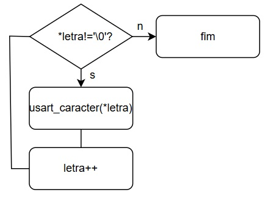
Fig. 26 – Fluxograma usart_frase
usart_linha(const char *frase)
A função usart_linha é utilizada para enviar uma linha completa de texto através do USART. Internamente, envia a frase pretendida e acrescenta um caracter de nova linha ('\n') no final, facilitando a leitura das mensagens no sistema de monitorização.
4) Descrição de cada função — Script Python
O script em Python foi desenvolvido para receber os dados enviados via comunicação série, efetuar o registo dos eventos em ficheiros de log e encaminhar essas informações para um bot do Telegram. Este script permite a monitorização remota do sistema.
get_log_filename()
A função get_log_filename gera o nome do ficheiro de log com base na data atual. O nome do ficheiro segue o formato logs_AAAA-MM-DD.txt, permitindo a organização automática dos registos por dia. A função não recebe parâmetros e devolve uma string com o nome do ficheiro de log a utilizar.
async def main_async()
A função main_async implementa a lógica principal do script, sendo responsável pela leitura contínua dos dados provenientes da porta série, pelo registo dos eventos e pelo envio das mensagens para o Telegram. Inicialmente, é lido o chat id a partir do ficheiro chat_id.txt, sendo de seguida estabelecida a ligação ao bot do Telegram e à porta série COM3. Durante a execução, cada linha recebida pelo USART é processada, associada a um carimbo temporal e escrita num ficheiro de log diário. Sempre que ocorre a mudança de dia, o ficheiro de log é automaticamente fechado e é criado um novo ficheiro. Cada evento registado é enviado para o Telegram, sendo efetuado um tratamento de erros que evita que o script falhe caso ocorra algum problema no envio da mensagem.
| 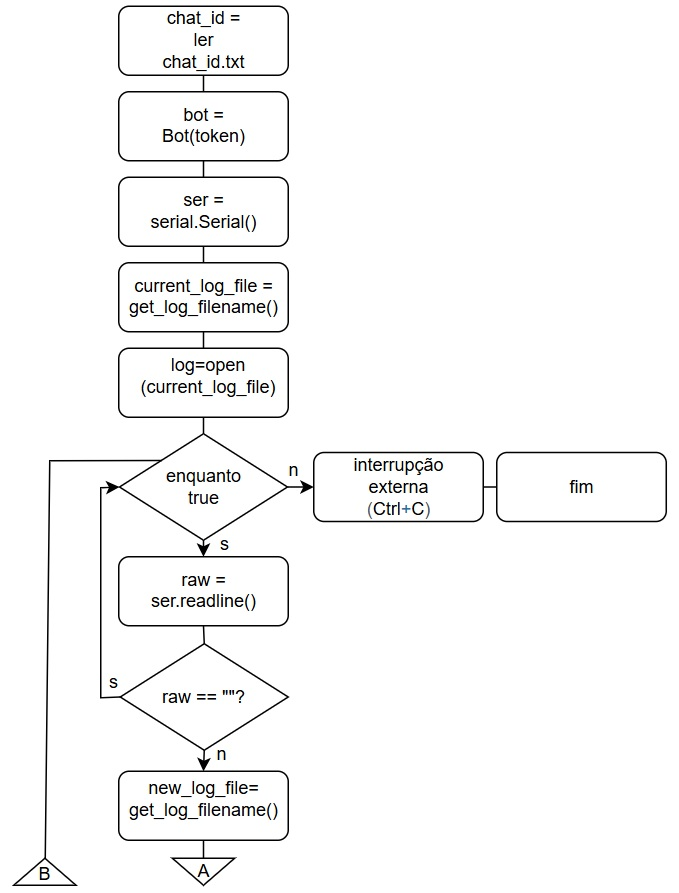 | 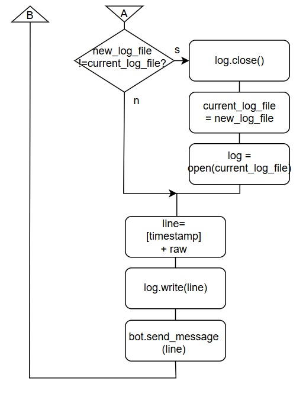 |
| Fig. 27 – Fluxograma main_async | Fig. 28 – Fluxograma main_async |
def main()
A função main é responsável por iniciar a execução do programa, recorrendo à biblioteca asyncio para executar a função assíncrona principal. Esta função garante o arranque correto do script e a gestão adequada do ciclo.
Bloco de execução principal
O bloco condicional if __name__ == "__main__": assegura que a função main é executada apenas quando o script é iniciado diretamente, evitando a execução automática do código caso eu queira importar uma função deste script noutro programa.
O fluxograma seguinte ilustra o pipeline de processamento e encaminhamento dos dados do sistema.
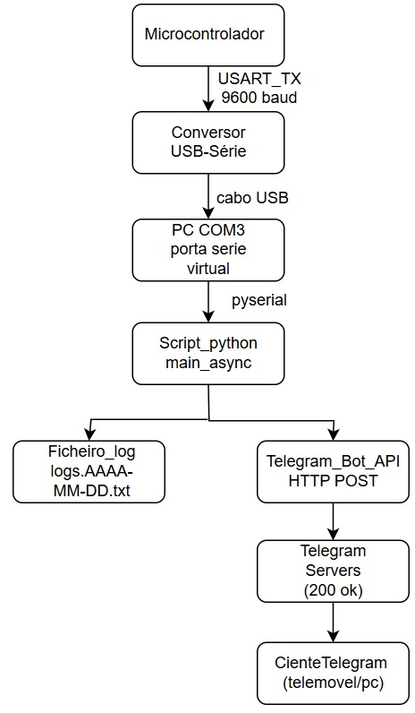
Fig. 29 – Fluxograma pipeline de logging
Nesta secção são apresentados os resultados obtidos durante os testes realizados ao sistema desenvolvido, mostrando o seu comportamento perante diferentes cenários de utilização.
Vídeo – Demonstração do funcionamento do sistema
O vídeo demonstra o funcionamento do sistema em diferentes situações, incluindo a entrada e saída de veículos no parque de estacionamento, a introdução de códigos PIN corretos e incorretos, a limpeza do código introduzido, bem como a atuação do sistema perante situações de timeout e deteção de obstáculos.

|
|
| Fig. 30 – Registos Telegram | Fig. 31 – Registos logs.txt |
As figuras apresentadas ilustram os registos gerados pelo sistema durante o seu funcionamento. Ao longo do funcionamento do sistema, os registos foram guardados localmente (PC) num ficheiro de texto (logs.txt) e enviados em tempo real para um bot Telegram, permitindo acompanhar remotamente as ações executadas.
O projeto desenvolvido consistiu na implementação de um sistema de gerenciamento de acessos para um parque, baseado num microcontrolador, integrando sensores, atuadores e interfaces de interação com o utilizador. Ao longo do trabalho foram implementadas funcionalidades como a deteção de entrada e saída de veículos, validação de acessos através de código PIN, mecanismo automático da cancela e apresentação de informação ao utilizador. Adicionalmente, foi incorporado um sistema de registo e monitorização, permitindo acompanhar o funcionamento do sistema através de logs locais e remotos. De uma forma geral, os diferentes componentes do projeto encontram-se funcionais e bem integrados, permitindo o funcionamento coordenado do sistema.
Como trabalho futuro, pensei em várias possibilidades de evolução do sistema de comunicação. Um primeiro upgrade passaria por implementar um broker MQTT local, onde um script principal recebe os dados da porta série e publica no broker, enquanto outros scripts subscrevem e tratam a informação, como o envio para Telegram ou Discord. Posteriormente, o broker poderia ser expandido para a rede local, permitindo que outros dispositivos na LAN possam subscrever e interagir diretamente com o sistema. Uma outra evolução poderia ser o facto de o broker fosse exposto à Internet, possibilitando que qualquer pessoa aceda diretamente às comunicações MQTT. Uma evolução mais significativa consistiria em substituir o PC por um microcontrolador com Wi-Fi, como o ESP8266 ou ESP32, que receberia os dados do Arduino via USART e publicaria diretamente no broker MQTT, tornando o sistema completamente autónomo e independente de um computador.
[1] ATmega2560
https://ww1.microchip.com/downloads/en/devicedoc/atmel-2549-8-bit-avr-microcontroller-atmega640-1280-1281-2560-2561_datasheet.pdf
[2] Arduino Mega 2560
https://docs.arduino.cc/hardware/mega-2560
[3] Servo Motor SG90
https://components101.com/sites/default/files/component_datasheet/SG90%20Servo%20Motor%20Datasheet.pdf
[4] Controlador do LCD 16x2 (HD44780)
https://www.sparkfun.com/datasheets/LCD/HD44780.pdf
[5] Teclado matricial
https://www.cliqueapostilas.com/Content/apostilas/3d20821660a483a32b3105410bd9b145.pdf